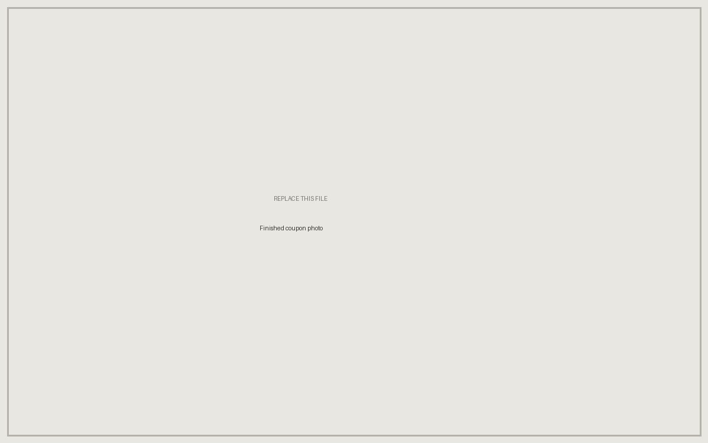

Engineering Intern · Aerodine Composites · Summer 2026
Ceramic Matrix Composite Research, Production, and Testing



The problem
Aerodine's core business is fiberglass and carbon fiber. To diversify the customer base, the company accepted an order for a structural component that had to survive continuous service above 1000 °C in a steam environment — a condition that rules out every polymer matrix the shop had ever run. There was no existing procedure, no qualified material system, and no in-house history with ceramics to fall back on.
What I did
I started with a materials survey to identify a matrix and reinforcement combination that could hold up under those conditions, working from the ceramic composites literature and supplier data. From there I worked on a small team to build the process end to end: polymer precursor selection and cure, infiltration, fiber content, sintering schedule, and final density. Each parameter had to be dialed in through a combination of literature research and hands-on trials.
I also developed the test plan used to qualify finished parts, covering flexural strength and porosity. That was the piece that converted subjective judgments about a given batch into numbers the team could defend to a customer.
What I learned
The thing I did not expect was how tightly coupled the process parameters were. Raising fiber content to chase flexural strength changed the infiltration behavior, which moved final density, which moved strength back the other way. I had come in treating the process as a checklist of independent settings to optimize one by one. It isn't — it's one system, and the only way to attribute a result to a cause was to hold everything else fixed and move a single variable at a time, then measure rather than eyeball. That discipline is what I took away from the summer, more than any particular parameter value.
Skills practiced
- Materials selection against a defined service environment
- Polymer-derived ceramic processing: infiltration, pyrolysis, and sintering
- Composite layup and vacuum bagging
- Design of experiments on coupled process variables
- Test plan development — flexural strength and porosity characterization
- Technical literature research and supplier evaluation
Note: specific formulations, process parameters, and customer details are proprietary to Aerodine Composites and are deliberately omitted here. This entry describes the engineering approach and the skills practiced rather than the recipe.